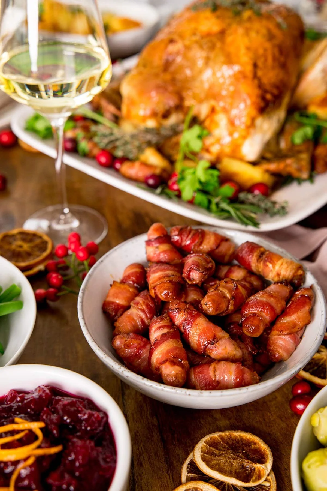

Meat Lovers Pigs in a Blanket
This sweet and smokey pigs in a blanket recipe will be a guaranteed smash hit for all of your party members!
Ingredients:
- Toothpicks
- Brown sugar
- Bacon
- Cocktail Weenies
Steps:
- Preheat the oven to 350 degrees
- Cut the bacon in half or thirds depending on how thick you want them
- Wrap the bacon around the cocktail weenies
- Stick the bacon to the cocktail weenie by implaing it with the toothpick
- Liberally coat the the wrapped weenie with brown sugar
- Put the pigs in a blanket on a baking sheet and set in the oven for 20 minutes
- Remove from oven and enjoy!